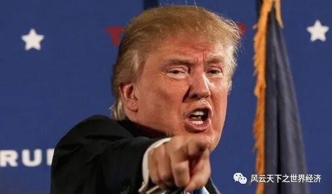
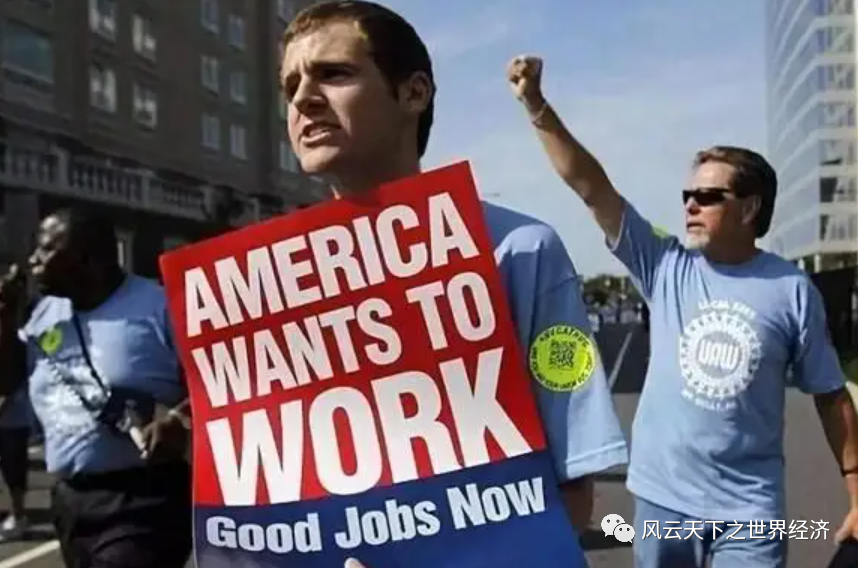

大洋彼岸的一纸公文
“我们在相当短的时间内失去了6万家工厂——它们关闭、停运、消失。至少有600万个工作机会没有了。”
他捋了捋自己的蓝色领带，黄豆色卷发下的面庞透露出七分不羁、三分傲慢。他清了清嗓子，继续说道：“我们的贸易赤字，为5040亿美元……无论从任何角度来看，它都是世界历史上任何国家的最大赤字。这是失控的……”
随后，在媒体的长枪短炮前,他在那份报告中签下了“Donald Trump”的名字，再次祭起了美国历史上屡试不爽的贸易保护利器——《301条款》。
电视前的下岗工人满意地笑了，躺在沙发上的农场主皱紧了眉，大洋彼岸的中国人则要睡不着觉了。

疯狂的总统先生
这是2018年3月22日，签字的人正是美国第45任总统——唐纳德·特朗普。他兑现了自己的诺言，却将世界带入了一条完全不同的路径。随后的故事，相信读者并不陌生。逐层叠加的关税，层层加码的制裁，媒体人的唇枪舌战……一切都在意料之中，而时至却今日依旧让人难以接受。
一场残酷的竞技游戏
特朗普当然有他自己的理由。随着美国的制造业向中国的转移，创造的巨额利润主要被华尔街和互联网公司的大鳄攫取，而底层的制造业工人依旧领着失业补贴过着艰苦的生活。2017年，华盛顿智库Institute for Policy Studies的报告显示，美国最富有三个人：贝索斯、盖茨和巴菲特的财富，等于美国底层约一半人口的财富总和，即超过1.6亿人次或6300万个家庭。底层民众两手空空，把自己唯一的财富——选票，投给了那个承诺“让美国再次伟大”的男人。何况中期选举在即，特朗普当然不能辜负那些把自己抬上总统宝座的选民们，为了对自己的选民负责，他承诺为美国制造业蓝领工人创造更多的就业岗位，而最直接创造就业岗位的方式就是把那些外国的竞争者挡在家门外。
回过头来看，如果认为贸易是造成美国如此大贫富差距的原因，那么这个观点至少是有一定的正确性的。1941年，美国经济学家斯托尔珀和萨缪尔森基于贸易理论推导出了著名的S-S定理。该定理说明了一个国家充裕要素的所有者可以从贸易中获利，而稀缺要素的所有者会因贸易而受损，贸易的分配效应产生了赢家和输家。这意味着在只考虑贸易的影响的情况下，发达国家的高技能劳动者的工资将会变得更高，这进一步加大了其贫富差距；而发展中国家的低技能劳动者工资水平会提高，贫富差距会减小。对于美国来说，由于自由贸易带来了产业转移，低技能劳动者的需求将会相对减少，从而导致工资下降和更多的失业，这与S-S定理的推论是一致的。

美国下岗工人在街头抗议
我们把目光放回到大洋彼岸的中国，这里的情况更为复杂。1978年-1995年的17年间，中国农村基尼系数从0.21上升为0.34，城镇基尼系数从0.16上升到0.28。到2010年，中国的基尼系数已经达到了0.437。更不必说政府的基础设施建设、社会保障及其他隐性收入在城乡、在穷人和富人之间的差距。开启自由贸易后，中国的贫富差距反而加大了。主要的解释一是中国从计划经济体制向市场经济体制转变，市场经济的马太效应拉大了贫富差距。二是引进的技术带来了技能偏向型技术变革，使得无论是否高技能密集型产业都倾向于雇佣更多的高技能劳动者，从而导致了收入分配的差距。虽然贸易并没有直接导致了贫富差距的增大，但这两者似乎都与中国实行对外开放和加入WTO脱不了干系。
这么看来，贸易似乎从一开始就是一场残酷的竞技游戏。
难以割舍的贸易自由
如果说贸易是一场残酷的竞技游戏，那么它为何愈演愈烈？
放弃贸易是不可能的，也是不好的。自由贸易是利大于弊的，正如真理是不言而喻的，几乎所有贸易学家都会同意这个观点。
无可否认的是，贸易至少能给本国能够带来如下收益：首先，自由贸易能够发挥两个国家的比较优势，使本国更加专注于生产自己更具备优势的产品，从而发挥本国的相对生产力优势。其次，通过进口先进的产品和技术，能够提升本国的要素生产率。这对于穷国来说尤其如此。比方说尼日利亚、赞比亚等非洲国家，如果不打开国门进行国际贸易，今天繁荣的化学工业、机械工业的发展估计还得后推几十年，而花卉种植业和旅游业甚至不会繁盛起来，至于中国援助的铁路可能就要到猴年马月了。最后，自由贸易降低了进口商品的实际价格，并扩大了消费者的选择范围，这有利于提高消费者的整体福利。因为在缺乏贸易的条件下，本国生产这些商品的成本将会更高，生产品类的丰富度也不足。
中国铁路在肯尼亚
也就是说，贸易促进了资源配置的效率，使得参与贸易的国家变得更加富有，并提高了消费者的福利。无论从李嘉图比较优势理论，各国能够专注于自己擅长的事，通过交换提高自己的福利；还是从赫克歇尔-俄林模型，各国能够出口自己丰裕的生产要素，都证明自由贸易能够使得各个国家受益。
事实上，目前反对自由贸易的主要是发达国家的低技能劳动者群体。高技能劳动者显然是支持贸易的。而对于发展中国家的低技能劳动者而言，即使收入增长不及高技能劳动的迅速，其收入的绝对值也因为贸易提高了。另外，即使没有反映在收入上，但公共提供的教育、医疗、养老等服务也实实在在的提高了这些劳动者的生活水平和幸福感。也就是说，自由贸易的受益者总是远多于受害者，总收益高于总损失。在经济学上，这称为潜在的帕累托改进。这种改进由于增加了社会的总财富，总是让人难以割舍。
向富人征税？
既然总收益高于总损失，我们只要找到一个足够好的转移支付的办法，把一部分收益转移给受害者不就好了吗？但现实来看，这并不容易。
从实现社会收入分配的结果公平的角度，向富人征税会是一个合乎情理的方法。一方面，从上文的分析可以看到，高收入者在贸易中是相对受益更多的，于是有理由对他们征收更多的税收。另一方面，由于富人对社会稳定的评价更高，有能力也有需求通过一定的转移支付降低社会的贫富差距以维持一个良好的社会环境。
困难的是如何让富人从腰包里掏出钱来，以及怎样的税收是适度的。对富人施加重税的做法的效果会适得其反，惩罚性的高税率会打击生产率最高的富人的积极性，还会增加他们为了避税隐瞒收入或是直接逃离的可能性。
富人或逃往“避税天堂”
一个著名的例子就是法国的富人税。法国国民议会于2012年10月19日表决通过向年收入百万欧元以上的富人征收75%“特别团结捐税”。这项政策当时受到法国民众的普遍看好，而实际效果却大相径庭。政策开始实施后，法国的富人，包括球星、影星等纷纷出逃法国，加入其它国籍，大大损害了法国的竞争力和国际形象。2015年2月，法国宣布取消这项富人税。
向富人减税则更不可取，英国前首相特拉斯于2022年9月提出的减税计划招致了民众的普遍反感和抨击，增加富人财富并不能有效刺激消费，而减税造成的通货膨胀却要穷人来承担。这也间接导致了特拉斯的下台。
出于税收调整的敏感性和影响的广泛性，理想的方式可能是广泛收集民意和逐步调整。一种可能的方式就是设置专项的贸易调整税，其税率应该广泛收集出口企业和本地企业的意见，并通过政府协商的方式进行确定。但是协调的成本谁来支付？采取怎样的方式进行公共决策？这则引出了更多的问题。
劫富不可取，济贫如何？
正如班纳吉和迪弗洛在《好的经济学》中写到的那样，如果可以明确界定贸易的收入和损失，那么进行补偿就是有可能的。
贸易调整援助就是一种颇值得尝试的方案。贸易调整援助的基本思路便是“授人以渔”。它主要为因为贸易受损的下岗职工给予再培训的机会，帮助他们转行。在H-O模型中，如果劳动力能够在各个部门之间自由流动，那么贸易中的输家可以转向赢家的部门进行生产，工资应该趋于一致。比如在美国，下岗的钢铁工人如果能够加入农业生产，那么他们的情况会比现在要好的多，而贸易援助计划就是帮助被淘汰的行业的工人跨过其它行业的壁垒。
目前而言，多个经济体已经采取了这个方式。美国是最早实施贸易调整援助的国家，自《2015年贸易调整援助法》出台，美国逐步完善了贸易调整援助制度（TAA）。欧盟自从2007年1月推出欧洲全球化调整基金（The European Globalization Adjustment Fund）以来，也不断扩大援助范围。如今在欧盟，任何一家包括其供货商和下游生产商在内裁员超过200人的公司即可申请启动该基金。中国则从2017年开始在上海试点，2021年在上海正式实施，未来可能逐步推向全国。
就业培训可能是贸易调整的重要方式
目前贸易调整援助面临的困境主要来自于黏性经济和成本两方面。一方面，从微观角度来讲，当工人需要调整自己的职业，可能需要离开家乡，承受在外务工的痛苦，因而他们可能会拒绝援助。另一方面，从宏观角度而言，贸易调整援助还会面临资金来源不足的情况。援助计划开支可能巨大，一方面是由于涉及的劳动力数量多，另一方面是识别因贸易受损工人的行政管理成本。对于中国而言，主要的解决方法可能有三个：首先需要完善外来人口落户制度，便于产业工人流动；其次要增强部门之间的数据共享，及时反馈失业工人的情况以便进行及时援助；最后需要制定更合理的累进税制度，并且加强监管防止偷税漏税骗税行为的发生。
仰望星空，脚踏实地
从上文的分析已经可以看出，现实的复杂性使得贸易有时可能比S-S定理描述的更差：尽管社会总财富在增加，但攫取王冠上宝石的，却总是本就富得流油的那群人。但也许又不应该把锅完全扣在贸易头上，毕竟归根结底，贸易只是市场交换的一种形式而已，只不过跨过了民族国家这道人为的屏障。市场规则本就会带来两极分化，正如圣经《新约·马太福音》里说的那样：“凡有的，还要加倍给他，叫他多余；没有的，连他所有的也要夺过来。”
但目前国际贸易的规模和影响已经大到没有任何一个国家能够以一己之力阻断了，不仅没必要，而且不值得。本文开头提到的贸易战依然硝烟滚滚，但对美国并没有什么实质性的好处。尽管中美逆差缩小，美国贸易总逆差却在持续走高。据统计，2018至2021年美国贸易逆差额较2017年分别增长13%、20%、32%、68%，2021年贸易总逆差达8614亿美元，创下历史新高。失去了中国低价商品的护佑，美国政府对中国加征的部分关税，最终反而增加了美国人民的消费成本，也助推了美国在通胀的泥潭中越陷越深。而且对通胀的承受能力随着财富的减少递减，最终承受苦难的还是底层民众。
如果回到李嘉图、马克思等先贤所信奉的劳动价值论中，我们可以暂且回避贸易的分配效应，那么贸易将会是一个共赢的局面。无差别的人类劳动所构建的理想世界或许值得我们进一步追寻。但对于目前的技术和生产力水平，那还太遥远。任何一个一心为公的政府，都应该考虑设计更好的机制去调节贸易的分配效应（比如如何更好地应用贸易调整援助），而不是去阻止自由贸易。
只不过这未必符合总统先生的愿望罢了。